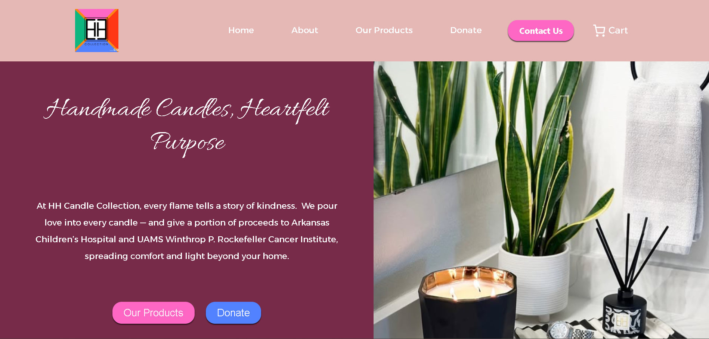
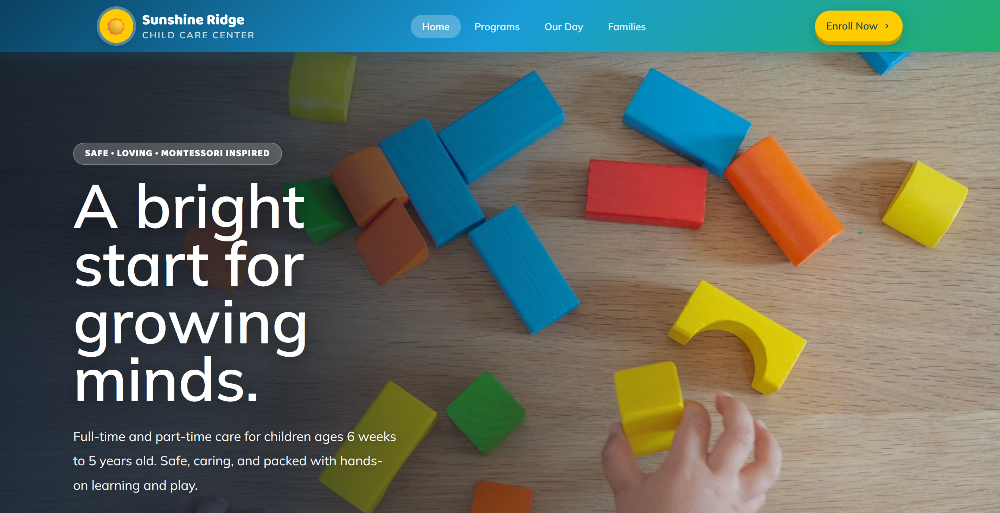
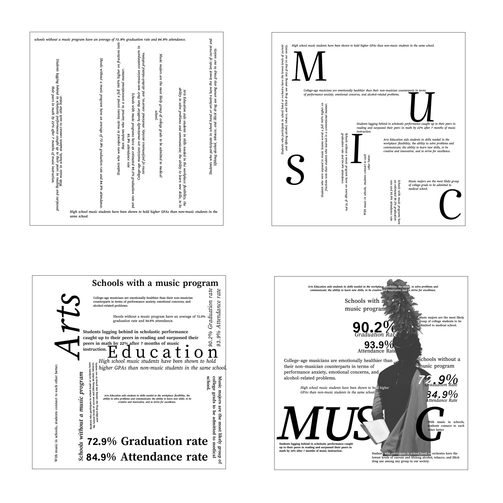
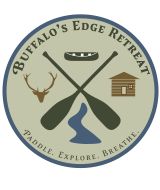
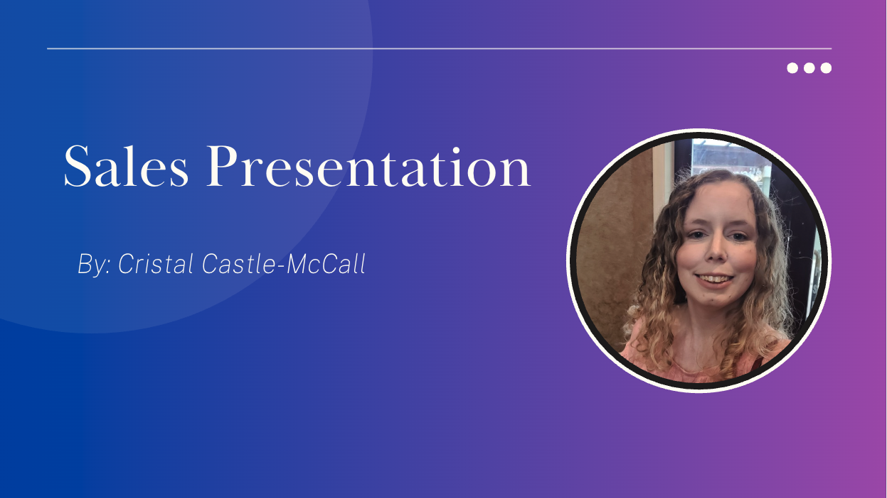
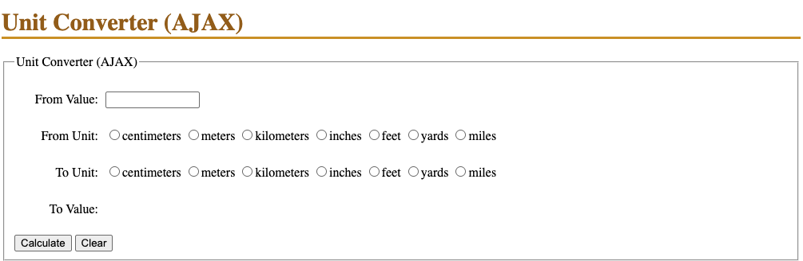
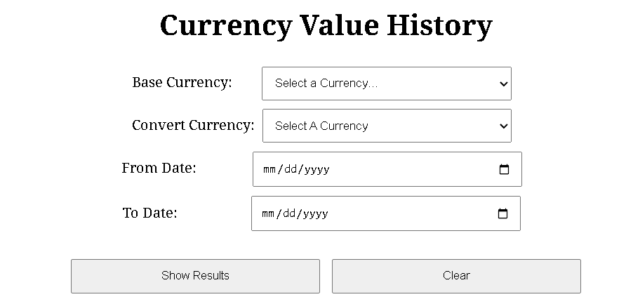

Portfolio
Explore a collection of projects demonstrating my experience in web design, front-end development, graphic design, accessibility, and user experience.
Web Design

HH Candle Collection Website
During my Web Design & Development internship with HH Candle Collection, I designed and developed a business website using WordPress and WooCommerce. I was responsible for the website's structure and visual design, incorporating client feedback to reflect the brand's identity while focusing on usability, responsive design, and e-commerce functionality.
My Contributions
- Designed and structured website pages and layouts to reflect the brand's identity.
- Built and maintained website content using WordPress.
- Worked with WooCommerce to support e-commerce functionality.
- Made design decisions focused on visual hierarchy, usability, and responsive layouts.
- Collaborated with the business owner to incorporate feedback and improve the website.

Sunshine Ridge Childcare Center Website
Sunshine Ridge Daycare is a website project created as part of my Web Design & Development degree. I designed and built the site using HTML, CSS, and JavaScript, focusing on a welcoming visual presentation, responsive layouts, and an accessible user experience.
My Contributions
- Designed and developed the website using HTML, CSS, and JavaScript.
- Created responsive layouts to support different screen sizes.
- Applied web accessibility and color contrast principles to improve usability.
- Used accessibility and contrast-checking tools to evaluate the design.
- Managed project files and development workflow using GitHub.

Haney Contractors
This project involved contributing to the visual design of the Haney Contractors website. I focused on design decisions that supported the company's brand identity, presented its construction services clearly, and created a professional, user-friendly experience for visitors.
My Contributions
- Contributed to the website's visual design and overall presentation.
- Made design decisions to support brand consistency and visual hierarchy.
- Considered layout, content organization, and usability when shaping the design.
- Helped present the company's services and project portfolio in a clear, professional format.

Personal Portfolio
I designed and developed my personal portfolio website to showcase my web development projects, visual design work, and technical skills. The site reflects my approach to responsive web design, accessibility, and user-friendly interfaces while providing a central place for potential employers to explore my work and experience.
My Contributions
- Designed and developed a personalized portfolio website.
- Created responsive layouts to support desktop, tablet, and mobile devices.
- Organized projects and skills into a clear, user-friendly interface.
- Applied front-end development techniques using HTML, CSS, and JavaScript.
- Refined visual hierarchy, navigation, and content presentation to improve usability.

Island Beach State Park Website
I designed and developed a multi-page website for Island Beach State Park, combining destination-focused visual design with interactive functionality. The project includes a dedicated weather page that retrieves weather information through an API and uses Chart.js to visualize weather data.
My Contributions
- Designed and coded a multi-page website using HTML, CSS, and JavaScript.
- Integrated a weather API to retrieve and display weather information dynamically.
- Used Chart.js to create data visualizations for the weather page.
- Developed page layouts with a focus on visual hierarchy, usability, and responsive design.
- Organized website content to provide visitors with an informative and engaging experience.
Visual Design and Creative Projects

Information Design Poster
This information design poster was created as part of my design coursework. The project focused on presenting information in a clear, engaging, and visually organized format through thoughtful typography, layout, and visual hierarchy.
My Contributions
- Designed a poster layout to communicate information clearly and effectively.
- Applied typography, spacing, and visual hierarchy to guide the viewer's attention.
- Organized information into a cohesive and easy-to-follow visual presentation.
- Used graphic design principles to balance readability and visual appeal.

Buffalo's Edge Retreat Logo
This logo design was created as part of a website design project. I developed the original logo to establish a visual identity for the brand and complement the overall website concept.
My Contributions
- Designed an original logo for the Buffalo's Edge brand.
- Made creative decisions regarding the logo's visual identity.
- Developed a graphic element intended to complement the website's design.

Graduation Celebration Sign
This graduation celebration sign was a graphic design project created to celebrate an important academic milestone. The design combines typography, layout, and visual elements to create a personalized piece for a graduation celebration.
My Contributions
- Designed the sign's overall layout and visual composition.
- Selected and arranged typography and graphic elements.
- Applied visual hierarchy to make the key celebratory message stand out.
- Created a cohesive design suited to the occasion.

StyleMode Editorial Design Project
StyleMode is an editorial design project focused on creating a magazine cover with a cohesive visual identity. The design explores typography, imagery, and layout to establish visual hierarchy and create an engaging, publication-ready presentation.
My Contributions
- Designed the magazine cover layout and overall visual composition.
- Selected and arranged typography to establish visual hierarchy.
- Organized headlines and graphic elements to create a balanced layout.
- Applied editorial design principles to create a cohesive magazine aesthetic.

High Voltage History Website Design Concept
High Voltage History is a website visual design concept created as a graphic design project using Adobe Illustrator. The project explores website layout, visual hierarchy, and graphic composition to present historical content through an engaging digital design.
My Contributions
- Designed the website interface concept in Adobe Illustrator.
- Organized page elements to establish visual hierarchy and clear content flow.
- Applied typography, color, and graphic design principles to create a cohesive visual style.
- Developed a visual presentation for a history-focused website concept.

My Life in Measures Video Editing Project
My Life in Measures is a personal multimedia storytelling project created as part of my Web Design & Development degree. Through video editing and visual storytelling, the project explores my personal connection to music and band.
My Contributions
- Edited and assembled video footage into a cohesive narrative.
- Selected and sequenced clips to support the story's flow and pacing.
- Incorporated titles and visual elements to complement the narrative.
- Made creative and editing decisions throughout production.
- Produced the final video using Adobe Premiere Pro.
Presentation and Communication

Professional Sales Speech
This professional communication project focused on presenting myself, my skills, and my strengths in a persuasive and professional manner. The speech emphasized communicating my value, highlighting my abilities, and building confidence in presenting myself to a potential employer or client.
My Contributions
- Developed a professional pitch highlighting my skills and abilities.
- Organized key strengths and qualifications into a clear, persuasive message.
- Practiced communicating my professional value to an audience.
- Applied audience awareness and professional communication techniques.
Programming Projects

Unit Converter
The Unit Converter is a web application designed to make converting measurements between different units simple and intuitive. The project focuses on interactive functionality, user-friendly design, and accurate conversions through a clear interface.
My Contributions
- Designed and developed the user interface.
- Implemented conversion functionality using JavaScript.
- Organized input fields and conversion results for ease of use.
- Focused on usability and clear presentation of results.

Currency Converter
This interactive currency converter was designed and developed to convert between currencies and explore historical exchange-rate trends. Using JavaScript and API integration, the application retrieves currency data and uses Chart.js to visualize historical exchange rates, making it easier to explore changes over time.
My Contributions
- Designed and developed the application's user interface.
- Implemented currency conversion functionality using JavaScript.
- Integrated an API to retrieve exchange-rate and historical data.
- Used Chart.js to visualize historical currency trends.
- Organized currency inputs, conversion results, and charts into a cohesive user experience.